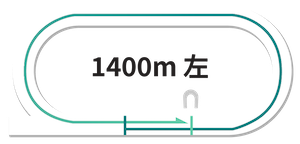
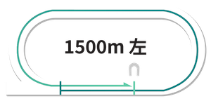
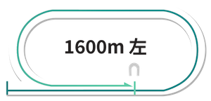
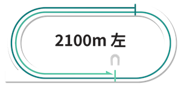

川崎競馬場コース解説
歴史と伝統の川崎競馬場の詳細なコース分析
川崎競馬場

コースデータ
- 回り：左回り
- フルゲート：14頭
- 1周距離：1,200m
- 直線：300m
- 幅員：25m
- 特徴：4角が急なカーブになっている
川崎900m攻略法｜スタートが命運を分ける短距離戦
向正面、2コーナー過ぎからスタートします。3コーナーまでの距離が400m近くあり、枠順の有利不利はありませんが、あまりにも距離が短いため、スタートで遅れると巻き返しは極めて困難になります。基本的には2歳夏までの新馬戦で多く使用される距離となっています。

川崎1400m攻略法｜内枠優勢のスピード戦
3号スタンド前から発走となり、1コーナーまでの距離が300m弱と短いため、内枠の先行馬にとって有利な条件となります。コーナーまでの距離が短いことから、ペースが安定しやすい傾向があります。
川崎1500m攻略法｜差しが利くハイペース指向
4コーナー過ぎ、直線入り口からスタートします。発走地点の内側にラチがないため、1番枠の馬が内に切れ込む場面が時々見られます。1コーナーまでおよそ400mと適度な距離があり、トップスピードで最初のコーナーに入るため、ハイペースになりやすい傾向があります。そのため、川崎では差しが効きやすい距離となっています。
川崎1600m攻略法｜メインレースの舞台
4コーナー奥のポケットからスタートします。最初のコーナーまで500m近くあり、枠順の有利不利は少ないですが、ホームストレッチでほぼ隊列が決まってしまうため、極端なハイペースにはなりにくいです。よって1コーナーまでのポジション取りが大きな鍵を握ります。
川崎2000m攻略法｜騎手の駆け引きが鍵
バックストレッチ中ほどがスタート地点です。最初のコーナーまでは300mもなく、内枠が断然有利です。しかもコーナーを6回も回るという、かなりトリッキーなコース形態です。九分九厘スローペースになるだけに、先行馬が断然有利で、差し馬には機を見て動ける器用さが求められます。

川崎2100m攻略法｜絶対能力の差が出るコース形態
2000mと同じく6回のコーナーを通過しますが、こちらは900mと同じスタート地点で、最初のコーナーまで距離があるため枠順差はあまりありません。その他の特徴はほぼ同じで、スローペースの前残りが基本です。
